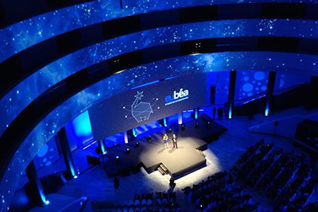
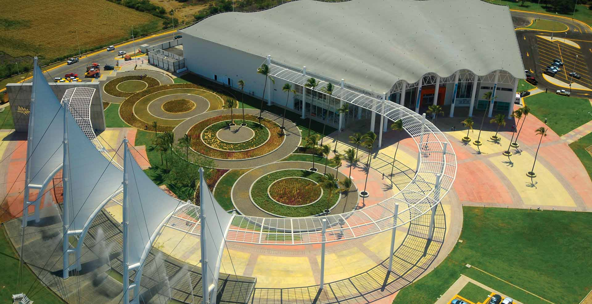

Los destinos, recintos y proveedores mexicanos están listos, dispuestos y capaces de ofrecer los recursos incomparables de México de manera sostenible para asegurar el éxito de cualquier congreso, convención, viaje de incentivo o exposición.
México se perfila como la 2da economía más grande de América Latina y la 11va más grande del mundo. Esto, aunado a sus atractivos naturales, su oferta cultural, una infraestructura especializada y su gama de actividades de ocio de primera categoría, ha resultado en el crecimiento rápido de la industria de Reuniones (convenciones, congresos, ferias y exposiciones).
Según la Asociación Internacional de Congresos y Convenciones (ICCA), México ocupa el 5to lugar en América en cuanto al número de eventos que acoge y a nivel mundial ocupa el 14º con más de 266 mil eventos anuales de gran escala a lo largo de toda la República. Convirtiéndolo en un país competitivo en la industria de reuniones.
La industria de reuniones genera divisas al país más de 2 mil 402 millones de dólares al año que corresponde al 14.81% del total de divisas que ingresan a México por turismo. Además, el total de ingresos (divisas más moneda nacional) es de 24 mil 900 millones de dólares, esto es, 1.5 % del PIB nacional.